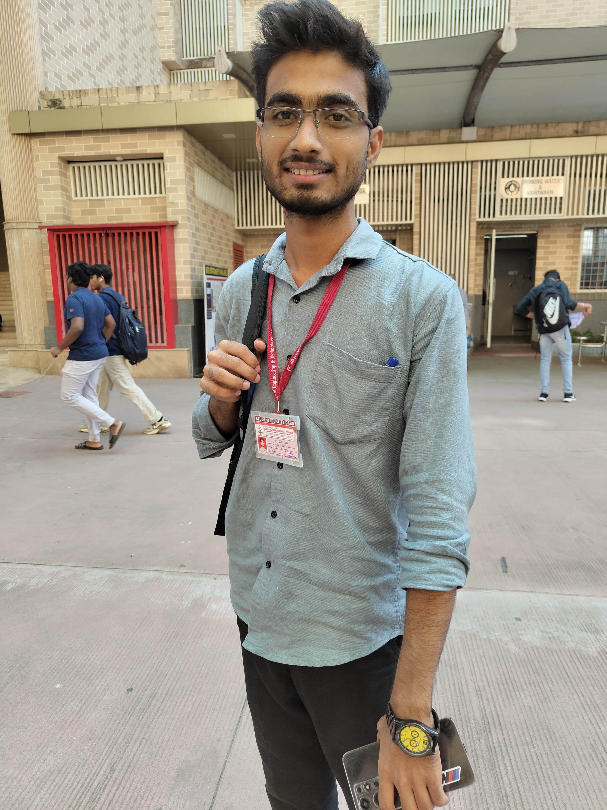

The Leaf

Sachin Gupta

Chetan Bhansode
About Us
The Leaf
Sachin Gupta

Chetan Bhansode
We are students from the same BCA batch, driven by our curiosity and interest in front-end development. As batchmates and close friends, we teamed up to create The Leaf — a fictional startup that represents our combined creativity and learning. This project is not just a technical showcase, but a reflection of the growth we have experienced through collaboration and continuous learning. We would like to extend our sincere gratitude to Mr. Sujeet Yadav, our respected faculty member, whose guidance and encouragement have played a key role in helping us think beyond the classroom and apply our knowledge practically. The Leaf may be fictional, but the effort, learning, and passion behind this project are very real.